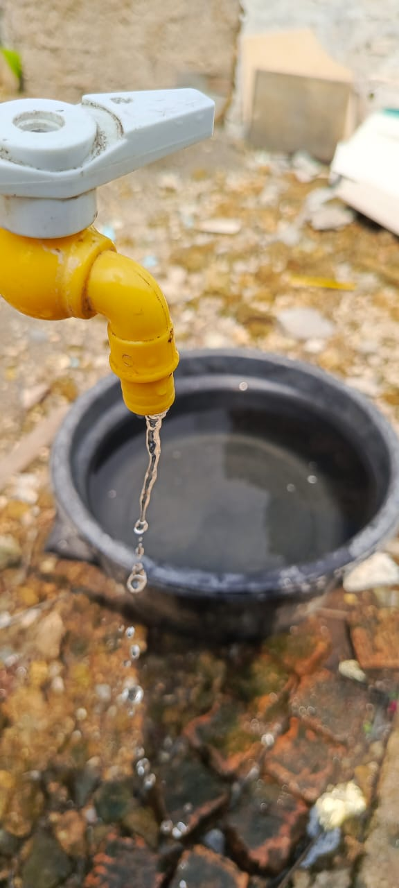

Edukasi Konservasi Air
Mari belajar tentang pentingnya menjaga sumber daya air kita untuk masa depan yang berkelanjutan.
Pelajari Lebih LanjutTentang Konservasi Air
Konservasi air adalah upaya penting untuk melindungi dan mengelola sumber daya air kita dengan bijak.
Beberapa alasan mengapa konservasi air sangat penting:
- Menjaga ketersediaan air bersih untuk generasi mendatang
- Melindungi ekosistem air dan keanekaragaman hayati
- Mengurangi biaya pengolahan dan distribusi air
- Menghemat energi yang digunakan dalam proses pengolahan air
- Mengurangi dampak perubahan iklim pada sumber daya air

Fakta Menarik tentang Air
71%
Permukaan bumi tertutup air
2.5%
Air tawar dari total air di bumi
2Miliar
Orang kekurangan akses air bersih
4000L
Air terbuang per bulan dari keran bocor